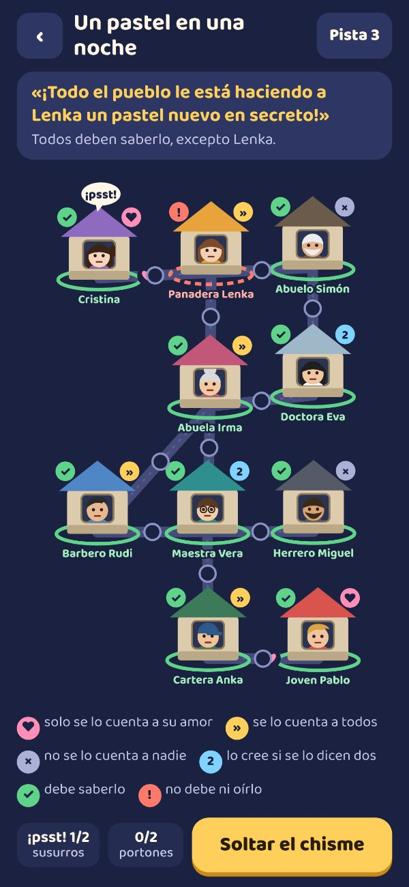
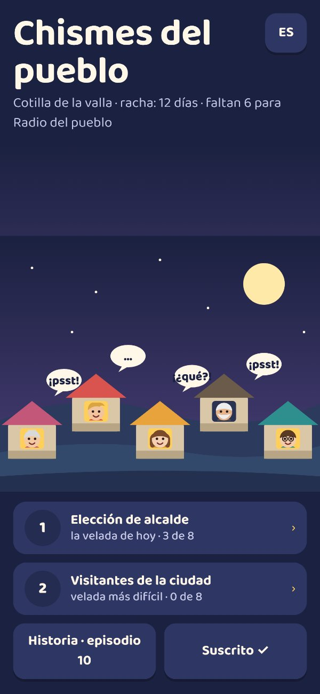
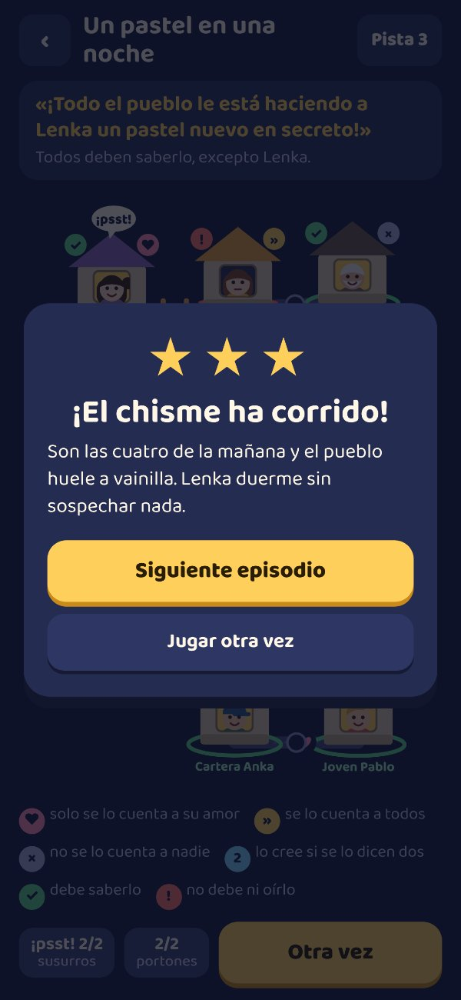

¿Quién debe oírlo y quién no debe enterarse nunca?
Un juego de puzles acogedor para el camino a casa. Susurra un chisme a un vecino y mira cómo recorre los caminos de los huertos de Villasusurro. La abuela se lo cuenta a todos, el abuelo a nadie, y el alcalde no se cree nada hasta oírlo dos veces.
Muy pronto en Google Play y en el App Store
Cómo se juega
- Lee el chisme de hoy y quién debe oírlo y quién no.
- Toca a un vecino para susurrárselo.
- Cierra portones para que no llegue a la casa equivocada.
- Suelta el chisme y mira cómo viaja. Cada vecino tiene sus costumbres.


Dos veladas nuevas cada día
Ocho chismes por velada, cada uno un poco más difícil. Unos 20 minutos, ideal para el autobús o el tren.
Una historia por episodios
Un pastel desaparecido, una pedida de mano secreta y un forastero con abrigo de piel, en dos temporadas.
Una mano, sin sonido
Dibujos grandes y claros. Juega de pie en el tranvía y para cuando quieras.
Funciona sin conexión
Sin cuenta y sin internet. Cada día aparecen solas veladas nuevas.
Precio
Descarga gratuita. La primera velada de cada día y los tres primeros episodios de la historia son gratis, con un anuncio breve entre chismes. Chismes del pueblo Plus desbloquea toda la historia, una segunda velada más difícil cada día y quita los anuncios: 7 días gratis, luego 4,99 € al mes o 39,99 € al año (o el equivalente en tu moneda). Pistas extra: 5 por 0,99 €. Cancela cuando quieras en los ajustes de la tienda.
Ayuda y contacto
¿Te has atascado con un chisme o tienes una idea para el pueblo? Escríbenos, respondemos a todos los correos.
parentshelpmy@gmail.com